| 題型一 | | |
| 填充1 | 已知 \(A(1, 0, -2), B(2, 2, 1), C(0, 1, 0)\)，則 \(\vec{AB}\cdot \vec{AC}=\) ______ | \(7\) |
| 填充5 | 設 \(\vec{a}=(2, -1, 1), \vec{b}=(1, 1, 2)\)，則 \(\vec{a}\cdot \vec{b}=\) ______ | \(3\) |
| 填充20 | 已知 \(\vec{a}=(3, -1, 0), \vec{b}=(-1, -2, 1)\)，則 \(\vec{a}\cdot \vec{b}=\) ______ | \(-1\) |
| 計算3 | 已知 \(|\vec{a}|=\sqrt{3}, |\vec{b}|=2\)，設 \(\vec{a}\) 與 \(\vec{b}\) 的夾角為 \(150^{\circ}\)，試求 \(\vec{a}\cdot \vec{b}\) 之值 | \(-3\) |
| 計算16 | 已知 \(|\vec{a}|=2, |\vec{b}|=6\)，設 \(\vec{a}\) 與 \(\vec{b}\) 的夾角為 \(\theta\)，試求下列夾角的 \(\vec{a}\cdot \vec{b}\)。
(1) \(\theta=45^{\circ}\)。
(2) \(\theta=120^{\circ}\)。 | (1) \(6\sqrt{2}\)
(2) \(-6\) |
| 計算40 | 已知 \(|\vec{a}|=3, |\vec{b}|=5\)，設 \(\vec{a}\) 與 \(\vec{b}\) 的夾角為 \(\theta\)，試求下列夾角的 \(\vec{a}\cdot \vec{b}\)。
(1) \(\theta=60^{\circ}\)。
(2) \(\theta=150^{\circ}\)。 | (1) \(\frac{15}{2}\)
(2) \(\frac{-15\sqrt{3}}{2}\) |
| 計算55 | 與計算16重複 | |
| 題型二 | | |
| 填充2 | 設 \(\vec{a}=(2, 1, 1), \vec{b}=(-1, 1, -2)\)，則 \(\vec{a}\) 與 \(\vec{b}\) 之夾角為 ______ 度。 | \(120\) |
| 填充10 | 設 \(\vec{a}=(1, 0, -\sqrt{2}), \vec{b}=(-1, 1, \sqrt{2})\)，求 \(\vec{a}\) 與 \(\vec{b}\) 的夾角為 _____ 度。 | \(150^{\circ}\) |
| 填充22 | 空間中一點 \(P(1, -2, 4)\)，若 \(P\) 在 \(x\) 軸、\(y\) 軸、\(z\) 軸的投影點分別為 \(A, B, C\)，則 \(\cos{\angle ABC}=\) ______ | \(\frac{2}{5}\) |
| 題型一、二 | | |
| 填充14 | 已知坐標空間中 \(A(2, -3, 4), B(3, -4, 4), C(2, -2, 3)\)，則
(1) 試求 \(\vec{AB}\cdot \vec{AC}=\) ______
(2) 試求 \(\vec{AB}\) 與 \(\vec{AC}\) 之夾角為 ______
(3) 試求 \(\vec{AB}\cdot \vec{CA}=\) ______ | (1) \(-1\)
(2) \(120^{\circ}\)
(3) \(1\) |
| 填充26 | 設 \(\vec{a}=(1, 1, 1), \vec{b}=(-1, \sqrt{6}, 1)\)，則：
(1) \(\vec{a}\cdot \vec{b}=\)
(2) \(\vec{a}\) 與 \(\vec{b}\) 之夾角為 | (1) \(\sqrt{6}\)
(2) \(60^{\circ}\) |
| 填充27 | 已知空間中 \(\vec{a}=(2, 1, -2), \vec{b}=(3, 4, 0)\)，試問
(1) \(\vec{a}\cdot \vec{b}=\) ______
(2) 若 \(\vec{a}\) 與 \(\vec{b}\) 的夾角為 \(\theta\)，則 \(\cos{\theta}=\) ______ | (1) \(10\)
(2) \(\frac{2}{3}\) |
| 計算2 | 坐標空間中有一個三角形，其頂點分別是 \(A(-2, 3, -1), B(-3, 1, 0), C(0, 4, 0)\)，試回答下列問題。
(1) \(\vec{AB}\cdot \vec{AC}\) 之值。
(2) \(\angle BAC\) 的大小。 | (1) \(-3\)
(2) \(120^{\circ}\) |
| 計算8 | 設 \(\vec{a}=(1, 1, 2), \vec{b}=(-1, 2, 1)\)，則
(1) 試求 \(\vec{a}\cdot \vec{b}\)。
(2) 試求 \(\vec{a}\) 與 \(\vec{b}\) 之夾角。 | (1) \(3\)
(2) \(60^{\circ}\) |
| 計算10 | 已知空間中三點 \(A(2, 3, 1), B(4, 5, 2), C(4, 0, 7)\)。試求
(1) \(\vec{AB}\cdot \vec{AC}\)。
(2) \(\cos{\angle BAC}\)。 | (1) \(4\)
(2) \(\frac{4}{21}\) |
| 計算12 | 若 \(\vec{a}=(2\sqrt{3}, 1, -1), \vec{b}=(2, 0, \sqrt{3})\)，試求
(1) \(\vec{a}\cdot \vec{b}\) 之值。
(2) 若 \(\vec{a}\) 與 \(\vec{b}\) 兩向量的夾角為 \(\theta\)，試求 \(\cos{\theta}\)。 | (1) \(3\sqrt{3}\)
(2) \(\frac{3\sqrt{6}}{14}\) |
| 計算15 | 已知空間中三點 \(A(2, 3, -1), B(1, 0, -2), C(2, 4, 5)\)。試求
(1) \(\vec{BA}\cdot \vec{BC}\)。
(2) \(\cos{\angle ABC}\)。 | (1) \(20\)
(2) \(\frac{10\sqrt{6}}{33}\) |
| 計算19 | 與計算2重複 | |
| 計算20 | 設 \(\vec{a}=(0, 1, -1), \vec{b}=(1, -1, 0)\)，試求
(1) \(\vec{a}\cdot \vec{b}\) 之值。
(2) \(\vec{a}\) 與 \(\vec{b}\) 兩向量的夾角。 | (1) \(-1\)
(2) \(120^{\circ}\) |
| 計算22 | 設 \(\vec{a}=(2\sqrt{2}, 1, -2\sqrt{3}), \vec{b}=(0, 2, -\sqrt{3})\)，試回答下列問題。
(1) \(\vec{a}\cdot \vec{b}\) 之值。
(2) 若 \(\vec{a}\) 與 \(\vec{b}\) 兩向量的夾角為 \(\theta\)，試求 \(\cos{\theta}\)。 | (1) \(8\)
(2) \(\frac{8\sqrt{3}}{21}\) |
| 計算24 | 已知空間中三點 \(A(3, 1, 0), B(2, 5, 1), C(3, 0, 2)\)。試求
(1) \(\vec{BA}\cdot \vec{BC}\)。
(2) \(\cos{\angle ABC}\)。 | (1) \(20\)
(2) \(\frac{10\sqrt{6}}{27}\) |
| 計算25 | 坐標空間中有一個三角形，其頂點分別是 \(A(-1, 2, 2), B(1, 3, 3), C(-2, 0, 3)\)，試回答下列問題。
(1) \(\vec{AB}\cdot \vec{AC}\) 之值。
(2) \(\angle BAC\) 的大小。 | (1) \(-3\)
(2) \(120^{\circ}\) |
| 計算43 | 設 \(\vec{a}=(4, 2, 2), \vec{b}=(-2, 2, -4)\)。
(1) 試求 \(\vec{a}\cdot \vec{b}\) 之值。
(2) 試求 \(\vec{a}\) 與 \(\vec{b}\) 兩向量的夾角。 | (1) \(-12\)
(2) \(120^{\circ}\) |
| 計算58 | 設 \(\vec{a}=(-2, 4, -2), \vec{b}=(-4, 2, 2)\)，試求
(1) \(\vec{a}\cdot \vec{b}\) 之值。
(2) \(\vec{a}\) 與 \(\vec{b}\) 兩向量的夾角。 | (1) \(12\)
(2) \(60^{\circ}\) |
| 計算59 | 設 \(\vec{a}=(\sqrt{3}, 1, 0), \vec{b}=(-1, 0, 0)\)。
(1) 試求 \(\vec{a}\cdot \vec{b}\) 之值。
(2) 試求 \(\vec{a}\) 與 \(\vec{b}\) 兩向量的夾角。 | (1) \(-\sqrt{3}\)
(2) \(150^{\circ}\) |
| 計算63 | 與計算20重複 | |
| 計算64 | 與計算22重複 | |
| 計算65 | 與計算12重複 | |
| 題型三 | | |
| 填充3 | 圖為一正立方體，若 \(M\) 在 \(\overline{AB}\) 上，\(\overline{BM}=2\overline{AM}\)，\(N\) 為 \(\overline{BC}\) 之中點，則 \(\cos{\angle MON}=\) ______
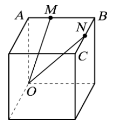 | \(\frac{4\sqrt{10}}{15}\) |
| 填充7 | 如圖為一長方體，\(O\) 點為原點且 \(F(2, 1, 3)\)，則 \(\vec{BE}\cdot \vec{BG}=\) ______
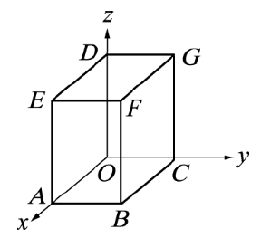 | \(9\) |
| 填充11 | 如附圖，長方體 \(ABCD\)-\(EFGH\) 的長、寬、高分別為 \(\overline{AB}=2, \overline{AD}=3, \overline{AE}=6\)，則內積 \(\vec{AH}\cdot \vec{AG}\) 之值為 ______
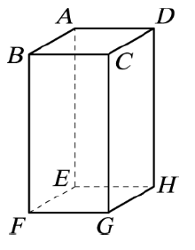 | \(45\) |
| 填充16 | 如圖，\(ABCD\)-\(EFGH\) 為一正立方體，\(P, Q\) 兩點分別為 \(BF\) 邊及 \(GH\) 邊上的中點，若 \(\angle APQ=\theta\)，則 \(\cos{\theta}\) 之值為 ______
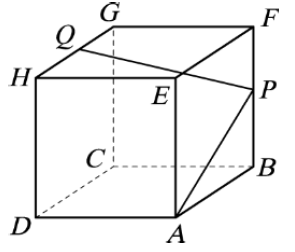 | \(\frac{\sqrt{30}}{30}\) |
| 填充21 | 如附圖，長方體 \(ABCD\)-\(EFGH\) 的長、寬、高分別為 \(\overline{AB}=2, \overline{AD}=6, \overline{AE}=4\)，若 \(M\) 為 \(\overline{DH}\) 的中點，\(N\) 為 \(\overline{FG}\) 的中點，則 \(\vec{AN}\cdot \vec{BM}=\) ______
 | \(22\) |
| 填充29 | 空間中一正立方體，其三個稜邊分別落在坐標軸上，有一個平面將正立方體截出一個四邊形 \(ABCD\)，如附圖所示。已知 \(B, D\) 分別為所在稜邊的中點，且 \(\overline{EA}:\overline{AF}=3:2\)，求值 \(\cos{\angle DAB}=\) ______
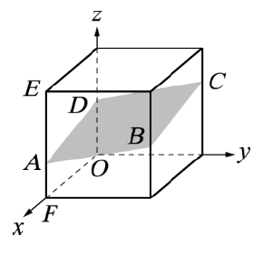 | \(\frac{1}{101}\) |
| 填充30 | 如圖，長方體 \(ABCD\)-\(EFGH\) 的長、寬、高分別為 \(\overline{AD}=6, \overline{AB}=2, \overline{AE}=4\)，若 \(M\) 為 \(\overline{DH}\) 的中點，\(N\) 為 \(\overline{FG}\) 的中點，則 \(\vec{AG}\cdot \vec{MN}=\) ______
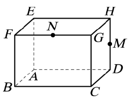 | \(-6\) |
| 填充33 | 與填充3重複 | |
| 填充39 | 在如圖的正立方體中，試求 \(\vec{AD}\cdot \vec{CG}=\) ______
 | \(0\) |
| 填充41 | 如圖，長方體 \(ABCD\)-\(EFGH\) 的長、寬、高分別為 \(\overline{AB}=2, \overline{AD}=6, \overline{AE}=4\)，若 \(M\) 為 \(\overline{DH}\) 的中點，\(N\) 為 \(\overline{FG}\) 的中點，則 \(\vec{AN}\cdot \vec{BM}=\) ______
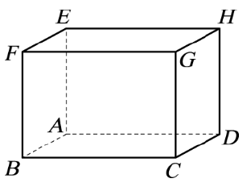 | \(22\) |
| 計算5 | 如圖為一長方體，其中 \(T\) 為 \(\overline{AD}\) 中點，\(S\) 為 \(\overline{PQ}\) 中點，且 \(\overline{AB}=3, \overline{BC}=4, \overline{PB}=6\)，試求 \(\sin{\angle TSB}\)。
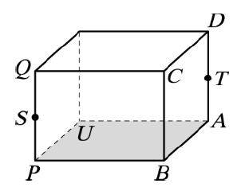 | \(\frac{\sqrt{7}}{5}\) |
| 計算6 | 如圖，長方體 \(ABCD\)-\(EFGH\) 的 \(12\) 條稜線延長為 \(12\) 條直線，若 \(\overline{AB}=3, \overline{AD}=4, \overline{AE}=2\)，求 \(\overline{AG}\) 和 \(\overline{CE}\) 所夾銳角的餘弦函數值。
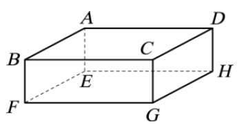 | \(\frac{21}{29}\) |
| 計算11 | 題圖是一個可以摺成長方體的展開圖，其中 \(T\) 為 \(\overline{AD}\) 中點，\(S\) 為 \(\overline{PQ}\) 中點，且 \(\overline{AB}=\overline{BC}=4, \overline{PB}=6\)。將展開圖摺成題圖右邊的長方體。
(1) 試求 \(\vec{UC}\cdot \vec{UD}\)。
(2) 試求 \(\cos{\angle CUD}\) 的值。
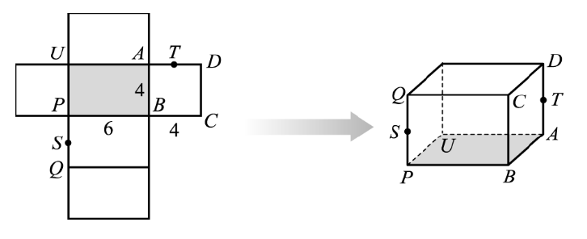 | (1) \(52\)
(2) \(\frac{\sqrt{221}}{17}\) |
| 計算26 | 題圖是一個可以摺成長方體的展開圖，其中 \(T\) 為 \(\overline{AD}\) 中點，\(S\) 為 \(\overline{PQ}\) 中點，且 \(\overline{AB}=\overline{BC}=4, \overline{PB}=6\)。將展開圖摺成題圖右邊的長方體。
(1) 試求 \(\vec{US}\cdot \vec{UT}\)。
(2) 試求 \(\cos{\angle SUT}\) 的值。
 | (1) \(4\)
(2) \(\frac{\sqrt{2}}{10}\) |
| 計算33 | 如圖為一長方體，其中 \(T\) 為 \(\overline{AD}\) 中點，\(S\) 為 \(\overline{PQ}\) 中點，且 \(\overline{AB}=3, \overline{BC}=4, \overline{PB}=6\)，試求
(1) \(\vec{BS}\cdot \vec{BT}\)
(2) \(\cos{\angle SBT}\)。
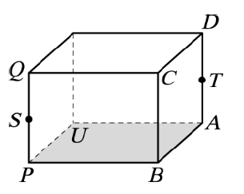 | (1) \(4\)
(2) \(\frac{\sqrt{130}}{65}\) |
| 計算37 | 如圖，已知在單位正立方體中 \(\overline{OP}=\overline{PA}\)，試求 \(\sin{\angle QPR}\) 之值。
| \(\frac{2\sqrt{5}}{5}\) |
| 計算39 | 如圖為一長方體，其中 \(T\) 為 \(\overline{AD}\) 中點，\(S\) 為 \(\overline{PQ}\) 中點，且 \(\overline{AB}=3, \overline{BC}=4, \overline{PB}=6\)，試求 \(\cos{\angle AQB}\)。
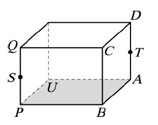 | \(\frac{2\sqrt{793}}{61}\) |
| 計算45 | 如附圖為一長方體，其中 \(T\) 為 \(\overline{AD}\) 中點，\(S\) 為 \(\overline{PQ}\) 中點，且 \(\overline{AB}=1, \overline{BC}=2, \overline{PB}=5\)。試回答下列問題。
(1) \(\vec{BS}\cdot \vec{BT}\)。
(2) \(\cos{\angle SBT}\)。
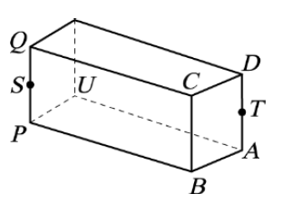 | (1) \(1\)
(2) \(\frac{\sqrt{13}}{26}\) |
| 計算54 | 如圖，已知在單位正立方體中 \(\overline{OP}=\overline{PA}\)，試求
(1) \(\vec{RP}\cdot \vec{RQ}\) 之值。
(2) \(\cos{\angle PRQ}\) 之值。
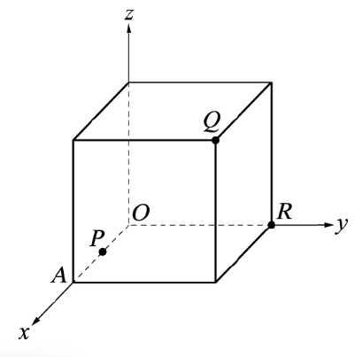 | (1) \(\frac{1}{2}\)
(2) \(\frac{\sqrt{10}}{10}\) |
| 題型四 | | |
| 填充4 | 坐標空間中兩向量 \(\vec{u}, \vec{v}\) 滿足 \(|\vec{u}|=5, |\vec{v}|=2\)，且 \(\vec{u}\) 與 \(\vec{v}\) 的夾角為 \(60^{\circ}\)，試求 \(|2\vec{u}+5\vec{v}|=\) ______。 | \(10\sqrt{3}\) |
| 填充6 | 已知 \(|\vec{a}|=4, |\vec{b}|=3\) 且 \(\vec{a}\cdot \vec{b}=-3\)，則 \(|2\vec{a}-\vec{b}|=\) ______ | \(\sqrt{85}\) |
| 填充17 | 坐標空間中兩向量 \(\vec{u}, \vec{v}\) 滿足 \(|\vec{u}|=2|\vec{v}|=2\sqrt{2}\)，且 \(\vec{u}\) 與 \(\vec{v}\) 的夾角為 \(150^{\circ}\)，試求 \(|\vec{u}-2\vec{v}|=\) ______。 | \(2\sqrt{3}+2\) |
| 填充34 | 設 \(A, B, C\) 為空間中不共線的三點，若 \(|\vec{AB}|=1, |\vec{AC}|=2\) 且 \(|2\vec{AB}-\vec{AC}|=2\)，則 \(\vec{AB}\cdot \vec{AC}=\) ______ | \(1\) |
| 計算1 | 坐標空間中向量 \(\vec{u}, \vec{v}\) 滿足 \(|\vec{u}|=3, |\vec{v}|=2, |3\vec{u}+2\vec{v}|=10\)，則 \(\vec{u}\) 與 \(\vec{v}\) 的夾角為 \(\theta\)。
(1) 試求 \(\vec{u}\cdot \vec{v}\)。
(2) 試求 \(\cos{\theta}\) 的值。 | (1) \(\frac{1}{4}\)
(2) \(\frac{1}{24}\) |
| 計算17 | 坐標空間中兩向量 \(\vec{u}, \vec{v}\) 滿足 \(|\vec{u}|=4, |\vec{v}|=3\)，且 \(\vec{u}\) 與 \(\vec{v}\) 的夾角為 \(60^{\circ}\)，試求 \(|3\vec{u}+2\vec{v}|=\) ______。 | \(6\sqrt{7}\) |
| 計算27 | 坐標空間中兩向量 \(\vec{u}, \vec{v}\) 滿足 \(|\vec{u}|=4, |\vec{v}|=3\)，且 \(\vec{u}\) 與 \(\vec{v}\) 的夾角為 \(120^{\circ}\)，試求 \(|5\vec{u}-2\vec{v}|=\) ______。 | \(2\sqrt{139}\) |
| 計算42 | 坐標空間中兩向量 \(\vec{u}, \vec{v}\) 滿足 \(|\vec{u}|=2, |\vec{v}|=6\)，且 \(\vec{u}\) 與 \(\vec{v}\) 的夾角為 \(120^{\circ}\)，試求 \(|2\vec{u}+3\vec{v}|=\) ______。 | \(2\sqrt{67}\) |
| 計算46 | 與填充4重複 | |
| 計算51 | 坐標空間中兩向量 \(\vec{u}, \vec{v}\) 滿足 \(|\vec{u}|=3, |\vec{v}|=1\)，且 \(\vec{u}\) 與 \(\vec{v}\) 的夾角為 \(120^{\circ}\)，試求 \(|\vec{u}-2\vec{v}|=\) ______。 | \(\sqrt{19}\) |
| 計算52 | 與計算42重複 | |
| 計算53 | 坐標空間中兩向量 \(\vec{u}, \vec{v}\) 滿足 \(|\vec{u}|=3, |\vec{v}|=5\)，且 \(\vec{u}\) 與 \(\vec{v}\) 的夾角為 \(60^{\circ}\)，試求 \(|3\vec{u}-2\vec{v}|=\) ______。 | \(\sqrt{91}\) |
| 計算57 | 坐標空間中兩向量 \(\vec{u}, \vec{v}\) 滿足 \(|\vec{u}|=5, |\vec{v}|=2\)，且 \(\vec{u}\) 與 \(\vec{v}\) 的夾角為 \(60^{\circ}\)，試求 \(|2\vec{u}+3\vec{v}|=\) ______。 | \(14\) |
| 計算62 | 坐標空間中兩向量 \(\vec{u}, \vec{v}\) 滿足 \(|\vec{u}|=3, |\vec{v}|=2\)，且 \(\vec{u}\) 與 \(\vec{v}\) 的夾角為 \(120^{\circ}\)，試求 \(|2\vec{u}-\vec{v}|=\) ______。 | \(2\sqrt{13}\) |
| 題型五 | | |
| 填充13 | 已知 \(\vec{a}\cdot \vec{b}=4, \vec{b}\cdot \vec{c}=-1\)，則 \((\vec{a}+2\vec{c})\cdot \vec{b}=\) ______ | \(2\) |
| 填充24 | 設 \(\vec{a}=(2, -1, 1), \vec{b}=(-2, 3, 1)\)，則 \((2\vec{a}+3\vec{b})\cdot (\vec{a}-2\vec{b})=\) ______ | \(-66\) |
| 填充31 | \(A(1, 2, 1), B(3, 5, 4), C(2, -1, 3)\)，則 \((3\vec{AB}+\vec{AC})\cdot (2\vec{BC}-3\vec{AC})=\) ______ | \(-141\) |
| 填充35 | 與填充31重複 | |
| 題型六 | | |
| 填充8 | 已知空間坐標中 \(\vec{a}=(2, 2, 1), \vec{b}=(-1, 3, 2)\)，設 \(\vec{c}=(-2, m, n)\)，若 \(\vec{a}\perp \vec{c}\) 且 \(\vec{b}\perp \vec{c}\)，則數對 \((m, n)=\) ______ | \((10, -16)\) |
| 填充9 | 設 \(\vec{a}=(1, 2, -1), \vec{b}=(3, 2x+5, 3y-1), \vec{c}=(z, 5, x-1)\)，若 \(\vec{a}\parallel \vec{b}\) 且 \(\vec{b}\perp \vec{c}\)，則序組 \((x, y, z)=\) ______ | \((\frac{1}{2}, \frac{-2}{3}, \frac{-21}{2})\) |
| 填充19 | 坐標空間中，設 \(A(1, 3, -7), B(3, 1, -2)\)，若 \(C\) 點在 \(z\) 軸上，且 \(\angle ACB\) 為直角，則 \(C\) 點坐標為 ______。 | \((0, 0, -4), (0, 0, -5)\) |
| 填充23 | 已知坐標空間中 \(A(2, -3, 1), B(3, -1, 7)\) 兩點，設點 \(P\) 是 \(z\) 軸上一點。若 \(\vec{PA}\perp \vec{PB}\)，求 \(P\) 點坐標為 ______ | \((0, 0, 4)\) |
| 填充25 | 已知 \(A(4, 1, 4), B(-2, 5, 1)\) 為空間中兩點，\(P\) 為 \(x\) 軸上一點，且 \(\angle APB=90^{\circ}\)，則 \(P\) 點坐標為 ______ | \((1, 0, 0)\) |
| 填充28 | 已知空間坐標中兩點 \(A(-1, -2, 3), B(2, 0, -3)\)，設 \(C\) 點在 \(z\) 軸上且 \(\vec{AC}\perp \vec{AB}\)，則 \(C\) 點坐標為 ______ | \((0, 0, \frac{25}{6}\) |
| 填充32 | 已知 \(\vec{a}=(2, -3, 1), \vec{b}=(k, -1, 1)\)，且 \(\vec{a}\perp \vec{b}\)，則 \(k=\) ______ | \(-2\) |
| 填充40 | 設 \(\vec{a}=(1, 2, 3), \vec{b}=(k, k-2, k)\)，若 \((\vec{a}-\vec{b})\) 與 \(\vec{a}\) 互相垂直，則 \(k=\) ______ | \(3\) |
| 填充42 | 設 \(\vec{OA}=(1, 2, -1), \vec{OB}=(2, 0, 1)\)，若 \(\vec{OC}\perp \vec{OB}, \vec{BC}\parallel \vec{OA}\)，則 \(\vec{OC}=\) ______ | \((-3, -10, 6)\) |
| 計算4 | 已知 \(\vec{a}=(3, 1, 3), \vec{b}=(3, 1, -1), \vec{c}=(x, 3, z)\)，若 \(\vec{c}\) 與 \(\vec{a}, \vec{b}\) 均垂直，試求 \(x, z\) 之值。 | \(x=-1, z=0\) |
| 計算9 | 已知坐標空間中 \(A(3, 2, 1), B(-1, 2, 2)\) 兩點，設 \(P\) 點是 \(y\) 軸上一點，若 \(\vec{PA}\perp \vec{PB}\)，試求 \(P\) 點坐標 | \((0, 1, 0), (0, 3, 0)\) |
| 計算13 | 已知坐標空間中 \(A(1, 2, 4), B(2, 2, -1)\) 兩點，設 \(Q\) 點是 \(x\) 軸上一點，若 \(\vec{QA}\perp \vec{QB}\)，試求 \(Q\) 點坐標 | \((1, 0, 0), (2, 0, 0)\) |
| 計算14 | 已知坐標空間中 \(A(2, 1, 5), B(-2, -2, 1)\) 兩點，設 \(Q\) 點是 \(x\) 軸上一點，若 \(\vec{QA}\perp \vec{QB}\)，試求 \(Q\) 點坐標 | \((1, 0, 0), (-1, 0, 0)\) |
| 計算21 | 已知坐標空間中 \(A(1, 2, 3), B(2, 2, -1)\) 兩點，設 \(P\) 點是 \(y\) 軸上一點，若 \(\vec{PA}\perp \vec{PB}\)，試求 \(P\) 點坐標 | \((0, 1, 0), (0, 3, 0)\) |
| 計算30 | 設 \(\vec{a}=(-2, 1, -1), \vec{b}=(4, x, y), \vec{c}=(z, 3, 1)\)，其中 \(x, y, z\) 為實數。若 \(\vec{a}\parallel \vec{b}\) 且 \(\vec{a}\perp \vec{c}\)，試求序組 \((x, y, z)\)。 | \((-2, 2, 1)\) |
| 計算31 | 已知 \(\vec{a}=(2, 5, -1), \vec{b}=(-1, 2, -4), \vec{c}=(x, y, -2)\)，若 \(\vec{c}\) 與 \(\vec{a}, \vec{b}\) 均垂直，試求 \(x, y\) 之值。 | \(x=4, y=-2\) |
| 計算32 | 設 \(\vec{a}=(2, 1, 0), \vec{b}=(1, -1, 0), \vec{c}=(1, 2, 2)\)，\(\vec{x}=\vec{b}+t\vec{c}\)（\(t\) 為實數），求使 \(\vec{a}\perp \vec{x}\) 的 \(t\) 值。 | \(\frac{-1}{4}\) |
| 計算35 | 已知坐標空間中 \(A(1, 2, 4), B(3, -1, 2)\) 兩點，設 \(P\) 點是 \(z\) 軸上一點，若 \(\vec{PA}\perp \vec{PB}\)，試求 \(P\) 點坐標 | \((0, 0, 3)\) |
| 計算36 | 已知空間向量 \(\vec{a}=(2, 3, 5), \vec{b}=(p, 9, q), \vec{c}=(-1, r, 1)\)，若 \(\vec{a}\parallel \vec{b}\) 且 \(\vec{a}\perp \vec{c}\)，試求 \(p+q+r\) 之值 | \(20\) |
| 計算38 | 已知 \(\vec{a}=(3, 1, 2), \vec{b}=(2, 1, 3), \vec{c}=(2, y, z)\)，若 \(\vec{c}\) 與 \(\vec{a}, \vec{b}\) 均垂直，試求 \(y, z\) 之值 | \(y=-10, z=2\) |
| 計算41 | 已知坐標空間中 \(A(-1, 2, 5), B(-3, 2, -3)\) 兩點，設 \(Q\) 點是 \(z\) 軸上一點，若 \(\vec{QA}\perp \vec{QB}\)，試求 \(Q\) 點坐標 | \((0, 0, -2), (0, 0, 4)\) |
| 計算44 | 已知坐標空間中 \(A(2, 6, 0), B(3, -1, 3)\) 兩點，設 \(P\) 點是 \(y\) 軸上一點，若 \(\vec{PA}\perp \vec{PB}\)，試求 \(P\) 點坐標 | \((0, 0, 0), (0, 5, 0)\) |
| 計算47 | 已知空間向量 \(\vec{a}=(-2, 3, 1), \vec{b}=(k, 6, 2)\)，則：
(1) 若 \(\vec{a}\parallel \vec{b}\)，試求 \(k\)。
(2) 若 \(\vec{a}\perp \vec{b}\)，試求 \(k\)。 | (1) \(-4\)
(2) \(10\) |
| 計算49 | 已知空間向量 \(\vec{a}=(1, 5, -1), \vec{b}=(2, k, -2)\)，則：
(1) 若 \(\vec{a}\parallel \vec{b}\)，試求 \(k\)。
(2) 若 \(\vec{a}\perp \vec{b}\)，試求 \(k\)。 | (1) \(10\)
(2) \(\frac{-4}{5}\) |
| 計算50 | 與計算9重複 | |
| 計算56 | 與計算44重複 | |
| 計算60 | 與計算14重複 | |
| 計算61 | 與計算31重複 | |
| 題型一、四 | | |
| 計算28 | 已知空間中兩向量 \(\vec{a}, \vec{b}\)，其中 \(|\vec{a}|=4, |\vec{b}|=3\)，且 \(\vec{a}, \vec{b}\) 的夾角為 \(60^{\circ}\)，試求：
(1) \(\vec{a}\cdot \vec{b}\)。
(2) \(|2\vec{a}-\vec{b}|\)。 | (1) \(6\)
(2) \(7\) |
| 計算34 | 已知空間中兩向量 \(\vec{a}, \vec{b}\)，其中 \(|\vec{a}|=3, |\vec{b}|=4\)，且 \(\vec{a}, \vec{b}\) 的夾角為 \(120^{\circ}\)，試求：
(1) \(\vec{a}\cdot \vec{b}\)。
(2) \(|\vec{a}+2\vec{b}|\)。 | (1) \(-6\)
(2) \(7\) |